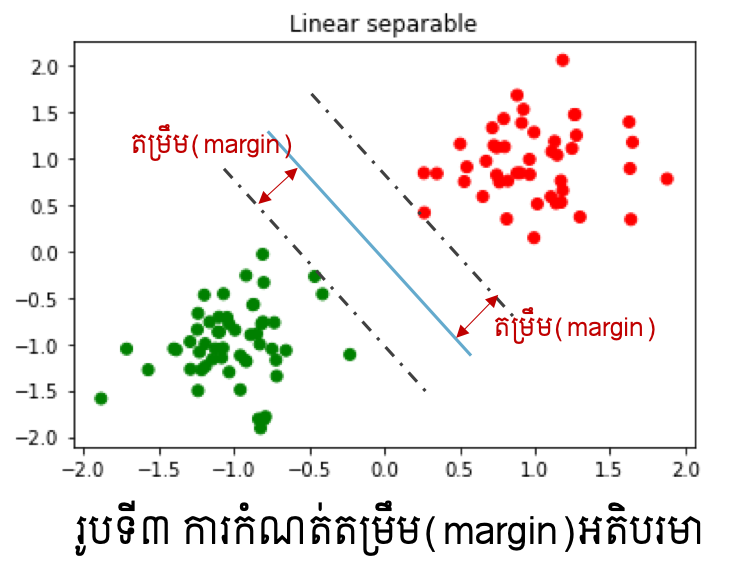

Support Vector Machine¶
ក្នុងអត្ថបទមុនៗ យើងបានណែនាំអំពីការធ្វើចំណាត់ថ្នាក់ទិន្នន័យ២ឬច្រើនក្រុមដោយប្រើម៉ូឌែលតម្រែតម្រង់(Linear regression, Logistic regression)។ ប៉ុន្តែមានចំណុចខ្សោយសំខាន់ពីរកើតមានឡើងក្នុងការប្រើប្រាស់ម៉ូឌែលតម្រែតម្រង់ក្នុងការធ្វើចំណាត់ថ្នាក់ក្រុមទិន្នន័យ ដូចបង្ហាញក្នុងរូបទី១ខាងក្រោម។ ក្នុងរូបខាងឆ្វេង ដោយសារមានទិន្នន័យប្រមូលផ្តុំច្រើននៅផ្នែកខាងក្រុមក្រហម ម៉ូឌែលតម្រែតម្រង់លីនេអ៊ែរនឹងផ្តល់ឱ្យនូវបន្ទាត់ព្រំដែនដែលខិតទៅជិតក្រុមក្រហមខ្លាំង (បន្ទាត់ខៀវ)។ ប៉ុន្តែតាមពិតបន្ទាត់ព្រំដែនទឹកក្រូចអាចមើលឃើញថាល្អប្រសើរជាង។ ក្នុងករណីរូបកណ្តាលនិងរូបខាងស្តាំ ច្បាស់ណាស់ថា ទិន្នន័យទាំងនេះមិនអាចធ្វើការបែងចែកដោយបន្ទាត់ត្រង់បានឡើយ ពោលគឺជាប្រភេទដែលមិនអាចបែងចែកលីនេអ៊ែរ(linear non-seperable data)។
ដើម្បីដោះស្រាយបញ្ហាទាំងនេះ ការធ្វើចំណាត់ថ្នាក់ក្រុមទិន្នន័យដោយប្រើSupport Vector Machineត្រូវបានប្រើ។ ក្នុងអត្ថបទនេះយើងនឹងណែនាំអំពីដំណើរការគណិតវិទ្យាក្នុងការដោះស្រាយបញ្ហាធ្វើចំណាត់ថ្នាក់ក្រុម២ឬច្រើនក្រុមដោយប្រើSupport Vector Machine។ យើងនឹងពិនិត្យទាំងករណីទិន្នន័យដែលអាចធ្វើបំណែងចែកលីនេអ៊ែរបាន(Linear Seperable) និងមិនបាន(Linear Non- Seperable)។
ចំណាត់ថ្នាក់២ក្រុម¶
នៅទីនេះយើងសិក្សាលើទិន្នន័យពីរក្រុម\((+1,-1)\) \(\mathcal{D}=\left\{\left(\pmb{x}_\pmb{i},y_i\right)\right\}_{i=1}^N\) ដែល \(\pmb{x}_\pmb{i}\in\mathbb{R}^d\ ,\ y_i\in\left\{+1,-1\right\} \)។ យើងចង់បង្កើតម៉ូឌែលចំណាត់ថ្នាក់ក្រុមមួយដែលធ្វើការបែងចែកតាមម៉ូឌែលលីនេអ៊ែរដែលតាងដោយទម្រង់ខាងក្រោម។
ក្នុងករណីដែលមាន \(m\left(\pmb{x}\right)=sign\left(\pmb{w}^\top\pmb{x}+b\right)\) ដែលផ្ទៀងផ្ទាត់ \(m\left(\pmb{x}_i\right)=y_i ∀ i=1,2,…,N \) នោះ ទិន្នន័យដែលមានហៅថា អាចធ្វើបំណែងចែកលីនេអ៊ែរបាន(Linear Seperable)។ ពោលគឺយើងអាចកំណត់បន្ទាត់ឬប្លង់ព្រំដែនដើម្បីបែងចែកទិន្នន័យទាំងពីរប្រភេទបានច្បាស់លាស់ដោយគ្មានកំហុសចំពោះគ្រប់ទិន្នន័យ។ ផ្ទុយទៅវិញ ករណីដែលមិនអាចរកបានម៉ូឌែលណាដែលផ្ទៀងផ្ទាត់លក្ខខណ្ឌខាងលើ យើងហៅថា មិនអាចធ្វើបំណែងចែកលីនេអ៊ែរបាន(Linear Non-Seperable)។
ករណីទិន្នន័យដែលអាចធ្វើបំណែងចែកលីនេអ៊ែរបាន(Linear Seperable)¶
ក្នុងករណីទិន្នន័យដែលអាចធ្វើបំណែងចែកលីនេអ៊ែរបាន ចំពោះទិន្នន័យ \(\mathcal{D}=\left\{\left(\pmb{x}_\pmb{i},y_i\right)\right\}_{i=1}^N\) យើងអាចសរសេរទំនាក់ទំនងខាងក្រោមបាន
ឬ ជារួម
ជាទូទៅ តម្លៃនៃប៉ារ៉ាម៉ែត្រ \(\left(\pmb{w},b\right)\) ដែលផ្ទៀងផ្ទាត់លក្ខខណ្ឌខាងលើមានច្រើនលើសពីមួយ។ ក្នុងចំណោមនោះ ដើម្បីជ្រើសបានប៉ារ៉ាម៉ែត្រដែលប្រសើរ គោលគំនិតក្នុង Support Vector Machine គឺកំណត់យកករណីដែលតម្រឹម(margin)នៃទិន្នន័យនិងព្រំដែនមានទំហំធំបំផុត។ ការកំណត់តម្រឹម(margin)ដែលធំបំផុតនៅទីនេះ គឺសំដៅដល់ការយកប៉ារ៉ាម៉ែត្រណាដែលធ្វើឱ្យចន្លោះរវាងទិន្នន័យទាំងពីរក្រុមនិងបន្ទាត់(ឬប្លង់)ព្រំដែនមានគម្លាតឆ្ងាយពីគ្នាបំផុត(រូបទី៣)។

យើងនឹងបង្ហាញបញ្ហាខាងលើជាទម្រង់គណិតវិទ្យា។ សន្មតបន្ទាត់ឬប្លង់ព្រំដែនមានទម្រង់ដូចម៉ូឌែលខាងលើ \(\pmb{w}^\top\pmb{x}+b=0\) ។ ចម្ងាយពីចំណុច \(\pmb{x}_0\in\mathbb{R}^d\) ទៅព្រំដែនអាចកំណត់បានដូចខាងក្រោម។
ហេតុនេះ ការកំណត់ប៉ារ៉ាម៉ែត្រ\(\left(\pmb{w},b\right)\) ដែលធ្វើឱ្យតម្រឹមអតិបរមាអាចកំណត់បានជាចំណោទបរមាដូចខាងក្រោម។
ក្រោមលក្ខខណ្ឌ
ចំណោទបរមាខាងលើអាចសរសេរជាទម្រង់សមមូលបែបងាយដូចខាងក្រោមបានដោយសារតែអនុគមន៍គោលដៅដែលត្រូវធ្វើបរមាកម្មមិនប្រែប្រួលតម្លៃឡើយពេល \(\pmb{w},b\) ត្រូវបានគុណនឹងចំនួនថេរក៏ដោយ។
ក្រោមលក្ខខណ្ឌ
អនុគមន៍គោលដៅខាងលើមានទម្រង់ជាអនុគមន៍ប៉ោងដឺក្រេទី២ ហើយលក្ខខណ្ឌរបស់វាដែលត្រូវផ្ទៀងផ្ទាត់មានទម្រង់ជាលីនេអ៊ែរ។ ចំណោទបរមាបែបនេះហៅថាចំណោទប្រូក្រាមលំដាប់២(QP:Quadratic Programming)។ ក្នុងការដោះស្រាយចំណោទបែបនេះមានalgorithmដែលមានប្រសិទ្ធិភាពខ្ពស់ជាច្រើនត្រូវបានស្រាវជ្រាវ។នៅទីនេះយើងនឹងមិនធ្វើការបកស្រាយលំអិតឡើយ។ សន្មតថាចម្លើយនៃចំណោទបរមាខាងលើគឺ \(\hat{\pmb{w}}\in\mathbb{R}^d,\hat{b}\in\mathbb{R} \)នោះការធ្វើចំណាត់ថ្នាក់ក្រុមទិន្នន័យអាចធ្វើបានដោយគណនាតាមទម្រង់ខាងក្រោម។
ជាមួយPython អ្នកអាចប្រើ sklearn.svm packageបានប្រើSupport Vector Machine Model។
from sklearn.svm import SVC,LinearSVC
sv_model = SVC(kernel="linear", C=1.0, random_state=1)
sv_model.fit(Xtrain,ytrain)
ករណីទិន្នន័យដែលអាចធ្វើបំណែងចែកលីនេអ៊ែរបាន(Linear Seperable)¶
ក្នុងករណីដែលទិន្នន័យមិនអាចធ្វើបំណែងចែកលីនេអ៊ែរបាន ចំណោទបរមាខាងលើគ្មាន តម្លៃប៉ារ៉ាម៉ែត្រណាដែលផ្ទៀងផ្ទាត់លក្ខខណ្ឌឡើយ។ ហេតុនេះដើម្បីដោះស្រាយបញ្ហាបំណែងចែកបែបនេះករណីកំហុស(មិនបំពេញលក្ខខណ្ឌ \(y_i\left(\pmb{w}^\top\pmb{x}_i+b\right)>0 \left(i=1,2,\ldots,N\right)\))ក្នុងបំណែងចែកខ្លះត្រូវបានលើកលែង។ដំណោះស្រាយបែបនេះហៅថា Soft Support Vector Machine។
នៅទីនេះដោយប្រើម៉ូឌែលបំណែងចែក\(m\left(\pmb{x}\right)=sign\left(\pmb{w}^\top\pmb{x}+b\right)\) ករណីទិន្នន័យ\(\left(\pmb{x}_i,y_i\right)\) តម្លៃនៃការពិន័យ(Loss)លើកំហុសនៃចំណាត់ថ្នាក់ក្រុមត្រូវបានកំណត់ដូចខាងក្រោម។
ចំពោះ \(y_i\left(\pmb{w}^\top\pmb{x}_i+b\right)\geq1\) យើងសន្មតថាម៉ូឌែលអាចបែងចែកបានល្អ ដោយកំណត់តម្លៃពិន័យ\( 0 \)
ចំពោះ \(y_i\left(\pmb{w}^\top\pmb{x}_i+b\right)<1\) យើងសន្មតថាម៉ូឌែលអាចបែងចែកមិនបានល្អដោយកំណត់តម្លៃនៃ ពិន័យ \(1-y_i\left(\pmb{w}^\top\pmb{x}_i+b\right)>0\)
ក្នុងករណីនេះដើម្បីកំណត់ប៉ារ៉ាម៉ែត្រដែលប្រសើរសម្រាប់ធ្វើចំណាត់ថ្នាក់ក្រុមជាមួយSoft Support Vector Machine យើងនឹងកំណត់តម្លៃប៉ារ៉ាម៉ែត្រណាដែលធ្វើឱ្យតម្រឹមធំបំផុត តែកម្រិតពិន័យ (Loss)តូចបំផុត។ យើងអាចបង្ហាញបញ្ហានេះជាទម្រង់ចំណោទបរមាបានដូចខាងក្រោម។
\(C\) ជាតម្លៃសម្រាប់កំណត់កម្រិតនៃការផ្តោតលើបរមាកម្មរវាងតម្រឹម(margin)និងពិន័យ(loss)។ នៅទីនេះដូចដែលអ្នកអាចចាប់អារម្មណ៍បាន ការកំណត់តម្លៃ\(C\)ជារឿងពិបាក។ វិធីដែលច្រើនអនុវត្តគឺការធ្វើ Cross-validation ។ យើងនឹងមិនលំអិតលើវិធីសាស្រ្តនេះឡើយនៅទីនេះ។
តាមលទ្ធផលក្នុងរូបខាងលើ យើងអាចផ្ទៀងផ្ទាត់ពីការធ្វើបំណែងចែកក្រុមបានល្អប្រសើរក្នុងករណីប្រើSoft Support Vector Machine ប្រើប្រៀបធៀបទៅនឹងម៉ូឌែលតម្រែតម្រង់ដែលបានសិក្សាកន្លងមក។ប៉ុន្តែទោះជាយ៉ាងណា ករណីទិន្នន័យដែលមិនអាចធ្វើបំណែងចែកលីនេអ៊ែរបាន កម្រិតត្រឹមត្រូវនៃការធ្វើចំណាត់ថ្នាក់ក្រុមនៅមានកម្រិតទោះបីជាប្រើSoft Support Vector Machineក្តី។
Kernel Support Vector Machine¶
ក្នុងករណីដែលទិន្នន័យមិនអាចបែងចែកលីនេអ៊ែរបាន ការប្រើKernelជាជំនួយត្រូវបាន អនុវត្តជាទូទៅ។ ជាមួយការប្រើប្រាស់Kernel សមត្ថភាពនៃការបង្ហាញលក្ខណៈពិសេសរបស់ទិន្នន័យនឹងត្រូវបានបង្កើន។ កាលពីសិក្សាពីម៉ូឌែលតម្រែតម្រង់ យើងបានលើកឡើងអំពីការប្រើអនុគមន៍គោលដែលជាអនុគមន៍មិនលីនេអ៊ែរដើម្បីបង្ហាញលក្ខណៈពិសេសរបស់ទិន្នន័យមួយចំនួន។
ស្រដៀងគ្នានេះជាមួយគោលគំនិតក្នុងការប្រើKernel ឧបមាថាយើងមានអនុគមន៍គោល \(\varphi_1\left(\pmb{x}\right),\varphi_2\left(\pmb{x}\right),\ldots,\varphi_D\left(\pmb{x}\right) \) នោះអនុគមន៍Kernel ត្រូវបានកំណត់ដូចខាងក្រោម ដែលនៅទីនេះ\(\Phi\left(\pmb{x}\right)=\left(\begin{matrix}\varphi_1\left(\pmb{x}\right)&\cdots&\varphi_D\left(\pmb{x}\right)\\\end{matrix}\right)^\top\) ។
ក្នុងករណីនេះ ទម្រង់នៃ ម៉ូឌែលចំណាត់ថ្នាក់ក្រុមនិងបន្ទាត់ឬប្លង់ព្រំដែនអាចបង្ហាញដូចទម្រង់ខាងក្រោម ដោយសន្មតយក \(\pmb{\beta}=\left(\begin{matrix}\beta_1&\cdots&\beta_n\\\end{matrix}\right)^\top\) ជំនួស\( \pmb{w} \)។
ដូចគ្នានឹងករណីទូទៅនៃSupport Vector Machine ដែរ ក្នុងករណី Kernel Support Vector Machine បញ្ហាខាងលើអាចបង្ហាញជាទម្រង់ចំណោទបរមាដូចខាងក្រោម។
ក្រោមលក្ខខណ្ឌ
ដែល \(K_{ij}=k\left(\pmb{x}_i,\pmb{x}_j\right)\) ។
ជាមួយPython អ្នកអាចជ្រើសរើសប្រភេទ Kernel ដែលនិយមប្រើដូចជា: លីនេអ៊ែរ linear , ពហុធា poly , Gaussian Kernel: rbf , Sigmoid Kernel: sigmoid ។
from sklearn.svm import SVC
sv_model = SVC(kernel="rbf", C=1.0, random_state=1)
sv_model.fit(Xtrain,ytrain)